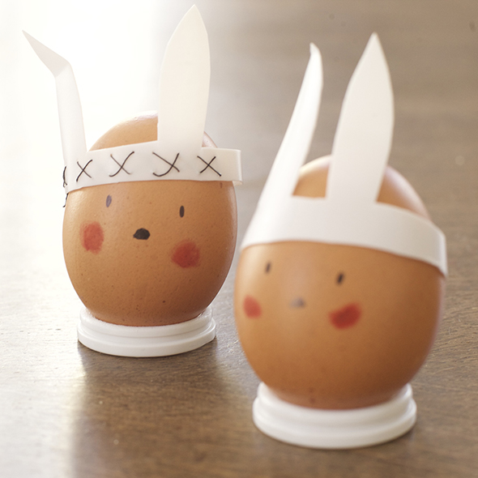
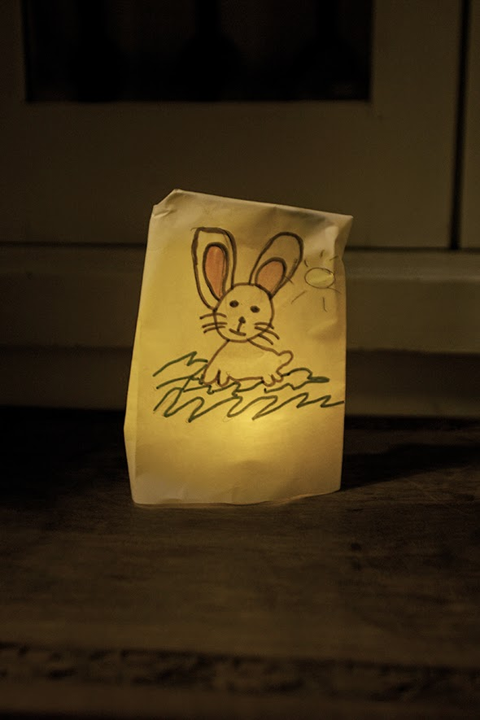

From a small yogurt drink bottle we make this costume for the egg. The egg comes into the Easter spirit. (If you separates the top of the bottle with the cutter, it can easily be used as an excellent egg stand)


From a small yogurt drink bottle we make this costume for the egg. The egg comes into the Easter spirit. (If you separates the top of the bottle with the cutter, it can easily be used as an excellent egg stand)


We glued pieces of colored paper on a balloon until it is completely wrapped, then you put on a second layer (in this case white) paper.…
Read more →
You have to halve Styrofoam eggs, but not in the middle (it looks better). In the back you make a hole, in which a magnet fits…
Read more →


The kids can make their own light decoration craft by using electric tea lights.
Read more →
Here is a printable of a bookmark. Depending on the impotence it can mark the page with 0, 1 or 2 ears. I'm working on these…
Read more →